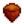

Backwoods
The Backwoods is an exterior region in the northwest part of Stardew Valley. It consists of two disconnected sections. The higher elevation section is a path connecting the Farm to the Mountain in an L-shaped curve. The lower section (outlined in blue in the map) can only be reached by heading west along the road from the Bus Stop, and provides access to The Tunnel.
Foraging
Forageable items found on the ground in the Backwoods are:[1]
- In Spring:
 Leek (58%), and
Leek (58%), and  Wild Horseradish (42%)
Wild Horseradish (42%) - In Summer:
 Grape (62%), and
Grape (62%), and  Spice Berry (38%)
Spice Berry (38%) - In Fall:  Hazelnut (53%),
 Common Mushroom (24%), and
Common Mushroom (24%), and  Wild Plum (24%)
Wild Plum (24%) - In Winter:
 Holly (43%),
Holly (43%),  Crocus (35%), and
Crocus (35%), and  Crystal Fruit (22%)
Crystal Fruit (22%)
Forageable items spawn at an average rate of 0.4 per night in spring, summer, and fall; in winter the rate is 0.25 per night.[2] They spawn only in the higher-elevation section of the Backwoods. The map shows the possible locations as red and magenta tiles; when the original trees are present, the magenta tiles have a 90% smaller chance of spawning items because they are identified as being behind the original trees.
There are also numerous Salmonberry and Blackberry bushes in both sections of the Backwoods.
Artifact Spots
The only Artifact that can be found by digging up Artifact Spots in the Backwoods is:
 Skeletal Hand (4-8%[3])
Skeletal Hand (4-8%[3])
Other possible items are:
- 1-3
 Clay (18-39%[3])
Clay (18-39%[3])  Lost Book (20% + 5-9%[3]); once all Lost Books have been found, any potential Lost Book is replaced by
Lost Book (20% + 5-9%[3]); once all Lost Books have been found, any potential Lost Book is replaced by  Mixed Seeds.
Mixed Seeds.- Only in Winter:
 Winter Root (24%)
Winter Root (24%) - Only in Winter:
 Snow Yam (16%)
Snow Yam (16%) - 1-3
 Stone (6-13%[3])
Stone (6-13%[3]) - 1-3
 Copper Ore (3-7%[3])
Copper Ore (3-7%[3]) - Only in Spring: 2-5
 Rice Shoots (5%)
Rice Shoots (5%) - 1-3
 Coal (2.4-5%[3])
Coal (2.4-5%[3]) - An unseen
 Secret Note: up to 3% chance, only if the player has a Magnifying Glass.
Secret Note: up to 3% chance, only if the player has a Magnifying Glass.
Artifact spots spawn only in the higher-elevation section of the Backwoods, at an average rate of 0.06 per night, except in winter when the average rate increases to 0.4 per night.[4]
Villager Paths
No villagers walk through the Backwoods, so items can be safely placed in any location.
Quests

- After receiving Linus' letter and accepting the blackberry basket quest, the basket is located in the lower section of the Backwoods at the left side of the screen. Although it can be seen from the upper path, the basket can only be reached by exiting the Bus Stop to the west along the road.
- The Backwoods is the scene of Abigail's 14-heart event.
References
- ↑ For each forage item, the provided percentage is the (average) percentage of all forage items that will be the specified item for that season. The input data is Locations.xnb, which is processed by code in GameLocation::spawnObjects.
- ↑ Of the 2000 total tiles in the Backwoods, 58 (3%) are valid spawn locations for standard forage items. For more information on forage item spawning, see Foraging.
- ↑ 3.0 3.1 3.2 3.3 3.4 3.5 The chance of finding extra items in Artifact Spots in season-dependent. The maximum chance is in summer and fall. In winter, the chance is 50% less; in spring it is 6% less. See Artifact Spot for more information.
- ↑ Of the 2000 total tiles in the Backwoods, 53 (3%) are valid spawn locations for artifact spots in spring, summer, and fall. 239 (12%) are valid spawn locations in winter. See Artifact Spot for more information.
| Locations | |
|---|---|
| Locations | Backwoods • Beach • Bus Stop • Calico Desert • Cindersap Forest • Farm • Farm Cave • Farm Pond • Graveyard • Ginger Island • Mastery Cave • Minecart • Mines • Mountain • Mutant Bug Lair • Pelican Town • Quarry • Quarry Mine • Railroad • Secret Woods • Sewers • Skull Cavern • Summit • Tunnel • Volcano Dungeon • Witch's Swamp |